hist(rnorm(3000, mean = 10, sd = 1)) 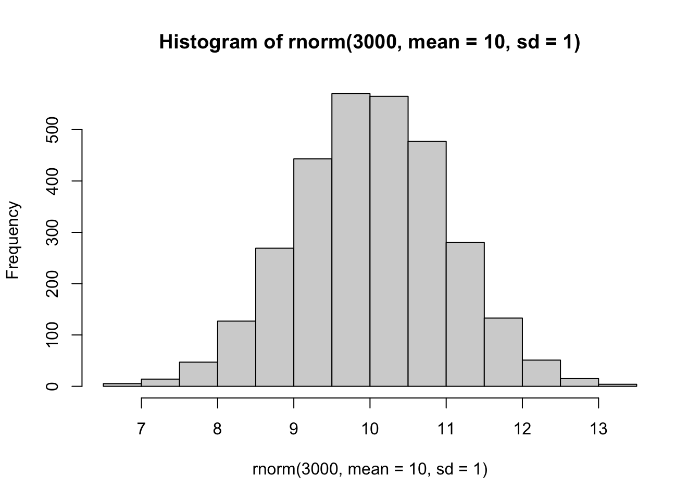
Today, we will begin our exploration of machine learning methods with a focus on clustering and dimensionallity reduction.
To start, let’s make up some sample data to cluster where we know what the answer should be.
hist(rnorm(3000, mean = 10, sd = 1)) 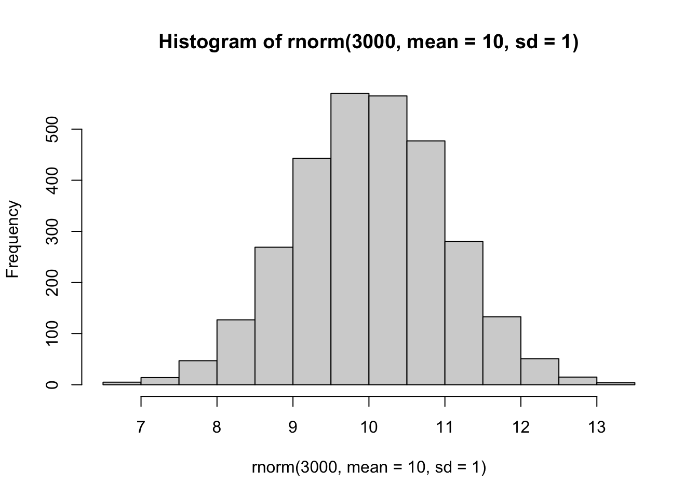
Q. Can you generate 30 numbers centered at +3 and -3 taken at random from a normal distribution?
temp <- c(rnorm(30, mean = 3), rnorm(30, mean = -3))
x <- cbind(x=temp, y=rev(temp))
plot(x)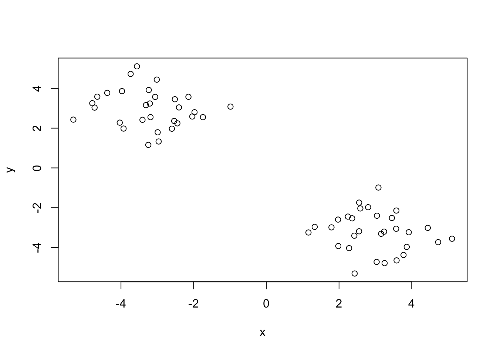
The main function in “base-R” for K-means clustering is called kmeans(). Run this function on x
k <- kmeans(x, centers = 2)
kK-means clustering with 2 clusters of sizes 30, 30
Cluster means:
x y
1 2.976658 -3.203308
2 -3.203308 2.976658
Clustering vector:
[1] 1 1 1 1 1 1 1 1 1 1 1 1 1 1 1 1 1 1 1 1 1 1 1 1 1 1 1 1 1 1 2 2 2 2 2 2 2 2
[39] 2 2 2 2 2 2 2 2 2 2 2 2 2 2 2 2 2 2 2 2 2 2
Within cluster sum of squares by cluster:
[1] 54.25498 54.25498
(between_SS / total_SS = 91.3 %)
Available components:
[1] "cluster" "centers" "totss" "withinss" "tot.withinss"
[6] "betweenss" "size" "iter" "ifault" Q. What component of your
kmeans()result object has the cluster centers?
k$centers x y
1 2.976658 -3.203308
2 -3.203308 2.976658Q. What component of your
kmeans()result object has the cluster size (i.e. how many points are in each cluster)?
k$size[1] 30 30Q. What component of your
kmeans()result object has the cluster membership vector (i.e. the main clustering result: which points are in which cluster)?
k$cluster [1] 1 1 1 1 1 1 1 1 1 1 1 1 1 1 1 1 1 1 1 1 1 1 1 1 1 1 1 1 1 1 2 2 2 2 2 2 2 2
[39] 2 2 2 2 2 2 2 2 2 2 2 2 2 2 2 2 2 2 2 2 2 2Q. Plot the results of clustering.
plot(x, col = k$cluster) +
points(k$centers, col = "blue", pch = 15, cex = 2)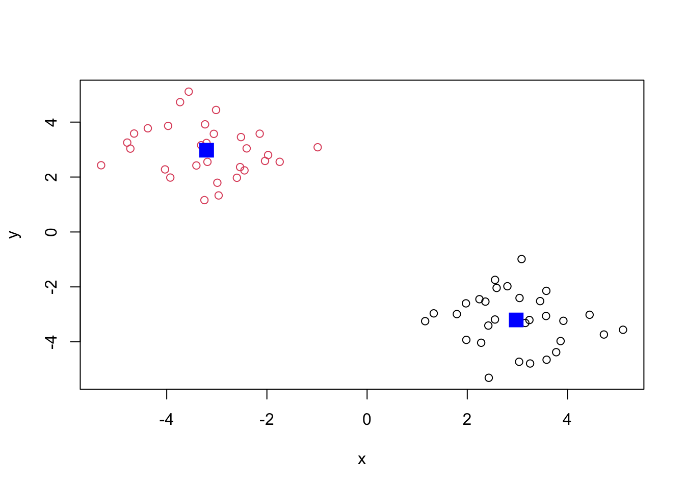
integer(0)Q. Can you run
kmeans()again and cluster into 4 centers and plot the results
k2 <- kmeans(x, centers = 4)
plot(x, col = k2$cluster) +
points(k2$centers, col="blue", pch = 15, cex = 2)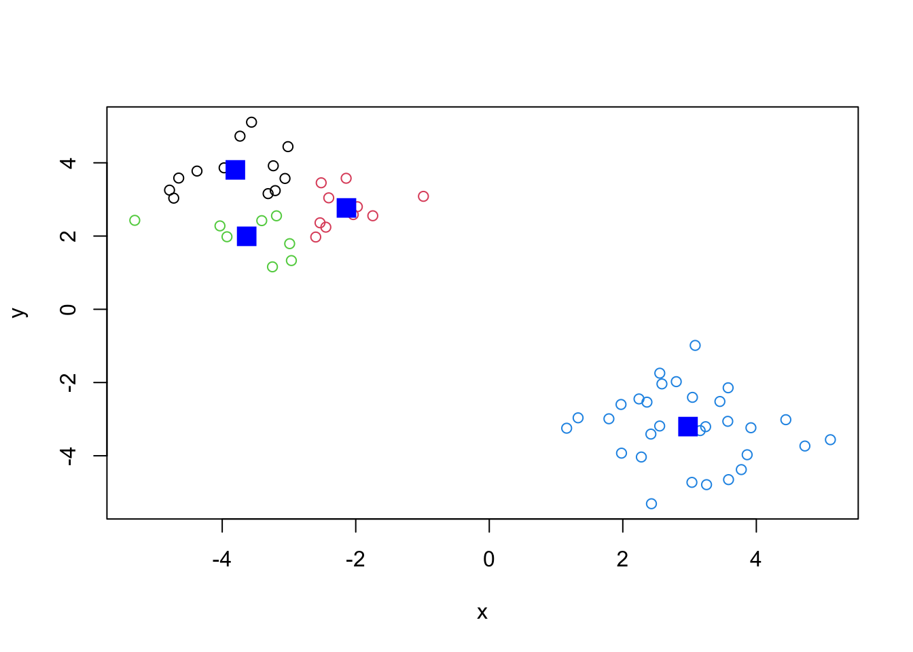
integer(0)Key-point:
kmeans()will always return the clustering that we ask for (this is theKorcentersin K-means).
k$tot.withinss[1] 108.51The main function for Hierarchical Clustering is hclust(). One of the main differences with respect to kmeans() is that you cannot pass your input directly to hclust(). It needs a “distance matrix”. You can get this from lots of places including dist(), which is set to euclidean by default. The clustering method is set to “complete” by default.
d <- dist(x)
hc <- hclust(d)
plot(hc)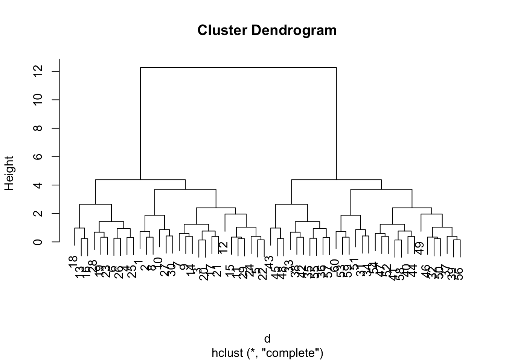
Let’s analyze the cluster by cutting the dendrogram at a certain height. Cutting this “tree” with cutree() at this height yields our clusters
plot(hc) +
abline(h=10, col="red")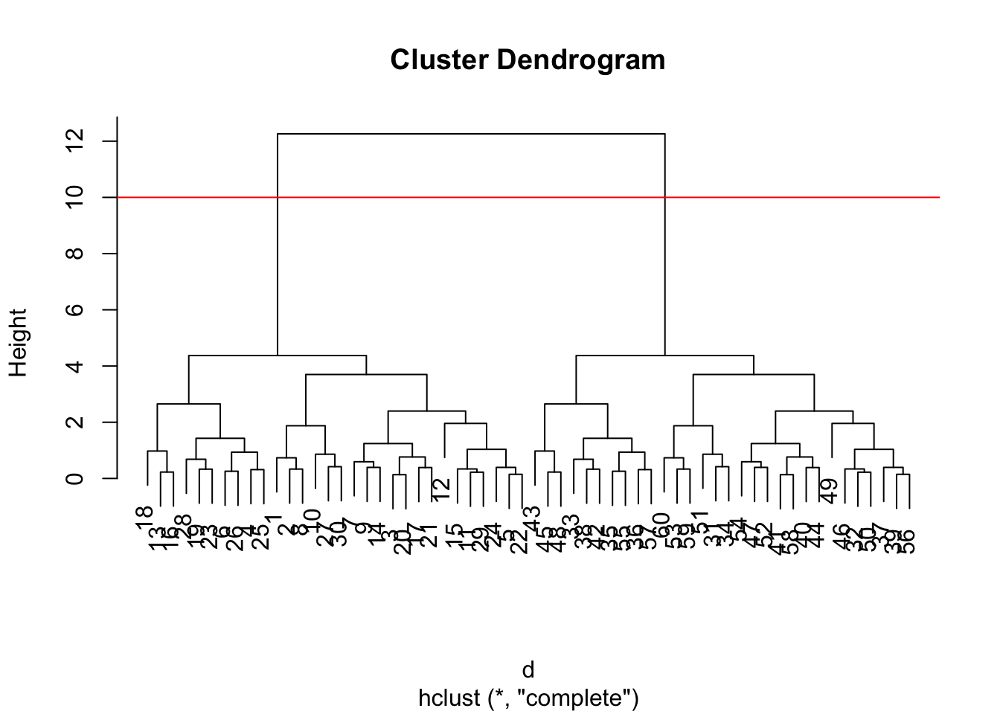
integer(0)groups <- cutree(hc, h=10)Q. Plot our data
xcolored by the clusterinv result fromhclust()
plot(x, col = groups)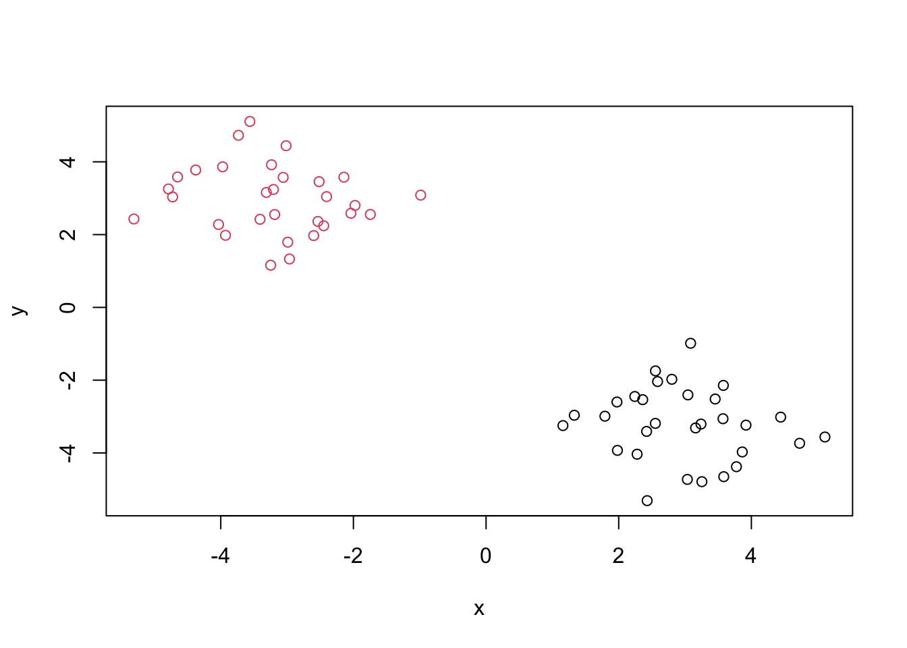
Let’s see more clusters. Below is a function that lets you choose to cutree() at any height for plot x.
hcluster <- function(y, z) {
plot(hc) +
abline(h=z, col="red")
groups <- cutree(hc, h=z)
plot(y, col = groups)
}
hcluster(x, 3)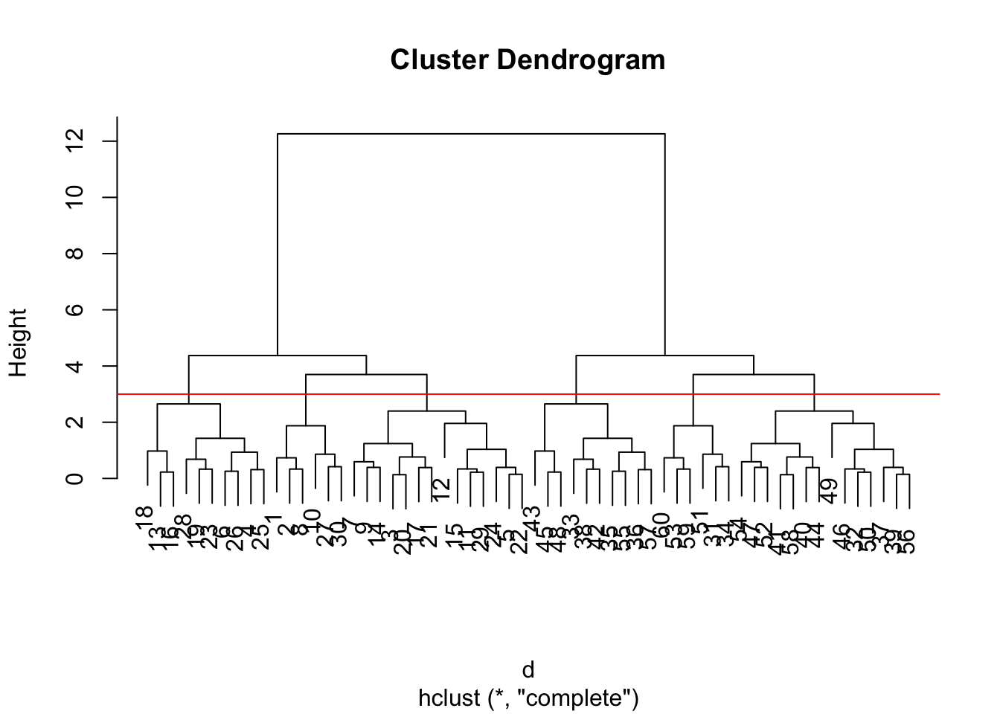
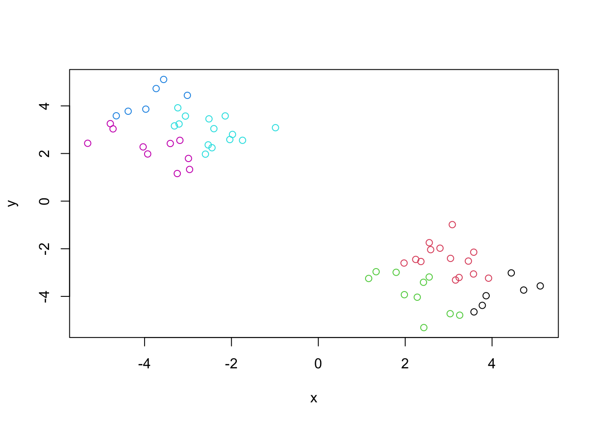
PCA is a popular dimensionallity reduction technique that is widely used in bioinformatics. PCA allows us to compare multiple dimensions that typically cannot be graphed on a 2d or 3d plot.
Q. 1
Note The first column shows the food names, but R cannot read this. Let’s move the first column to
rownames()and remove the first column withurl[,-1]altogether. Don’t forget to set this as the new csv file.
Let’s use rownames() to fix the data frame. HOWEVER, this isn’t sustainable because each rerun will destroy a column.
url <- read.csv("https://bioboot.github.io/bimm143_W26/class-material/UK_foods.csv")
head(url) X England Wales Scotland N.Ireland
1 Cheese 105 103 103 66
2 Carcass_meat 245 227 242 267
3 Other_meat 685 803 750 586
4 Fish 147 160 122 93
5 Fats_and_oils 193 235 184 209
6 Sugars 156 175 147 139dim(url)[1] 17 5rownames(url) <- url[,1]
url <- url[,-1]
head(url) England Wales Scotland N.Ireland
Cheese 105 103 103 66
Carcass_meat 245 227 242 267
Other_meat 685 803 750 586
Fish 147 160 122 93
Fats_and_oils 193 235 184 209
Sugars 156 175 147 139dim(url)[1] 17 4pca1 <- prcomp(url)There are five columns and 17 rows
Q. 2
Alternatively, we can use row.names within read.csv(). This is a much more compact and robust method of setting row names.
UK <- read.csv("https://tinyurl.com/UK-foods", row.names=1)
dim(UK)[1] 17 4Q. 3
Using the code below with both tidyr and ggplot2
library("ggplot2")Warning: package 'ggplot2' was built under R version 4.3.3library("tidyr")
library(tidyr)
x_long <- UK |>
tibble::rownames_to_column("Food") |>
pivot_longer(cols = -Food,
names_to = "Country",
values_to = "Consumption")
dim(x_long)[1] 68 3ggplot(x_long) +
aes(x = Country, y = Consumption, fill = Food) +
geom_col(position = "fill") +
theme_bw()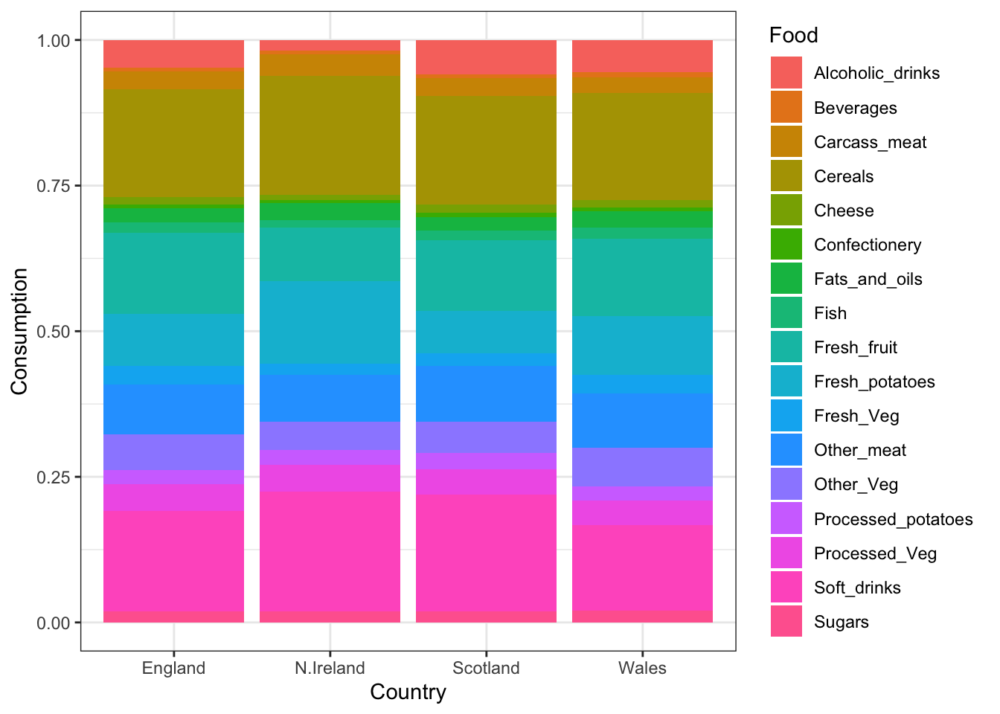
Q. 5
The dots in each plot compares the two countries. The diagonal lines means the food are being eaten between the two countries.
pairs(UK, col=rainbow(nrow(x)), pch=16)
library("pheatmap")Warning: package 'pheatmap' was built under R version 4.3.3pheatmap( as.matrix(UK) )
Of all these plot, really only the pair() plot was useful. This however took a bit of work to interpret and will scale when I am looking at much bigger dataset.
Finally, we will use the PCA function prcomp() in “base R”.
Note The function
prcomp()takes the observation as rows and variables as columns, thus we need to first transpose our data frame.
pca <- prcomp( t(UK) )
summary(pca)Importance of components:
PC1 PC2 PC3 PC4
Standard deviation 324.1502 212.7478 73.87622 2.921e-14
Proportion of Variance 0.6744 0.2905 0.03503 0.000e+00
Cumulative Proportion 0.6744 0.9650 1.00000 1.000e+00df <- as.data.frame(pca$x)
df$Country <- rownames(df)
# Plot PC1 vs PC2 with ggplot
ggplot(pca$x) +
aes(x = PC1, y = PC2, label = rownames(pca$x), col = rownames(pca$x)) +
geom_point(size = 3) +
geom_text(vjust = -0.5) +
xlim(-270, 500) +
xlab("PC1") +
ylab("PC2") +
theme_bw() 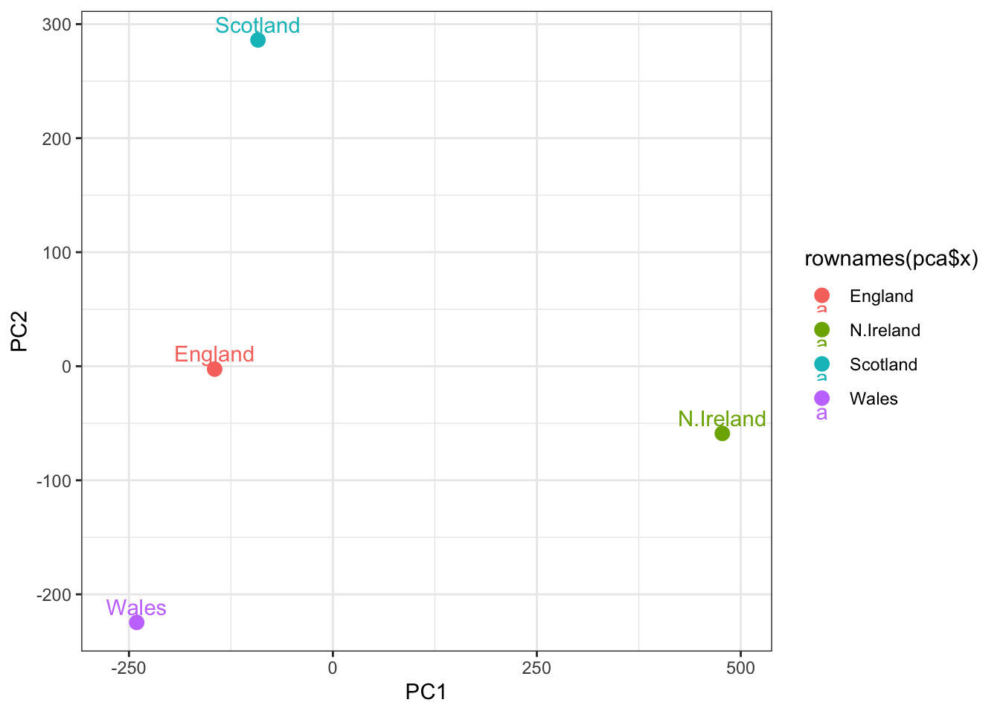
Q. How much variance is captured in the first PC?
PC1 has 67.44% of the variance and PC2 has 29.05% of the variance
Q. How many PCs do I need to capture at least 90%
We need both PC1 and PC2 to capture at least 90% of the variance (96.5%).
How do the original variables contribute to our new PCs? Below shows the loading score of PC1.
ggplot(pca$rotation) +
aes(x = PC1,
y = reorder(rownames(pca$rotation), PC1)) +
geom_col(fill = "steelblue") +
xlab("PC1 Loading Score") +
ylab("") +
theme_bw() +
theme(axis.text.y = element_text(size = 9))
Fresh fruit has a PC1 loading score of -0.6, meaning the groups at the left side of the PCA plot tend to eat more fresh fruits. Ireland tend to eat more fresh potatos because it is on the right side of PC1.
Q. 9
For PC2, soft drinks and fresh potatoes differ between countries, which is displayed vertically in the PCA plot.
ggplot(pca$rotation) +
aes(x = PC2,
y = reorder(rownames(pca$rotation), PC2)) +
geom_col(fill = "steelblue") +
xlab("PC2 Loading Score") +
ylab("") +
theme_bw() +
theme(axis.text.y = element_text(size = 9))